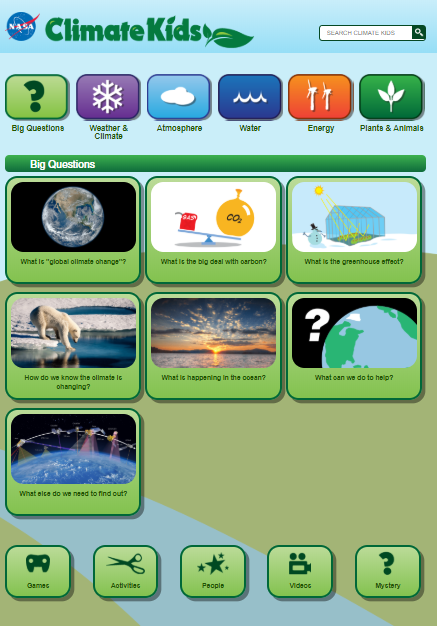

Some of the best information about global climate change that you could find today is on NASA's Climate Kids website.
The information you find comes directly from NASA's study of Earth. The site includes articles, activities, interviews, games, and videos. There are games, activities, articles, interviews, and image galleries for every topic on the site: weather & climate, atmosphere, water, energy, and plants & animals.
As you review games and activities, it will help if you know about the topics being addressed. Here are the "Big Questions" from NASA's Climate Kids and what you can find in each collection of articles.
What is "global climate change"? Learn about climate vs. weather, why we should care if Earth is getting warmer, and the cause of global warming.
What is the big deal with carbon? Learn about fossil fuels, how carbon gets into and out of living things, and whether carbon is good or bad.
What is the greenhouse effect? Learn what is a greenhouse, how Earth is a greenhouse, why planting trees alone does not solve the problem of carbon dioxide (CO2), and the effects of clouds on Earth cooling and warming.
How do we know the climate is changing? Learn why Earth is getting warmer, how we know about Earth's climate from long ago, how such a small temperature change can lead to so much melting, the problem with rising sea levels, and how climate change affects other species.
What is happening in the ocean? Learn why the ocean is important, how it soaks up energy and CO2, how it affects climate, and what salt in the ocean does.
What can we do to help? Learn what you can do to help nature help us, how to reduce your "carbon footprint" and trash pile, why you should save water, and other ways to make a difference.
What else do we need to find out? Learn about the questions scientists are currently asking, including how clouds, particles, and the Sun's natural cycles affect climate.
Greenhouse gases make Earth warm. Too much of them makes Earth too warm and causes global warming. Carbon dioxide (CO2) is one greenhouse gas that is causing global warming.
We have more CO2 in the atmosphere because we are burning fossil fuels for energy. Burning fossil fuels puts CO2 into the atmosphere. We burn fossil fuels when we drive gas-powered cars and trucks. We also burn fossil fuels when we use energy made from coal, natural oil, or natural gas. The energy that powers many homes and businesses comes from fossil fuels. To slow down global warming, we need to stop burning so much fossil fuel.
Instead of using fossil fuels, we can make electricity from sunlight and wind. Making electricity from sunlight or wind does NOT make CO2. That is why energy from that comes from sunlight and wind is called clean energy. Can you think of another clean energy source?
Some things help take CO2 out of the atmosphere. These are called CO2 sinks. Green plants are sinks because they have chlorophyll, so they go through photosynthesis.